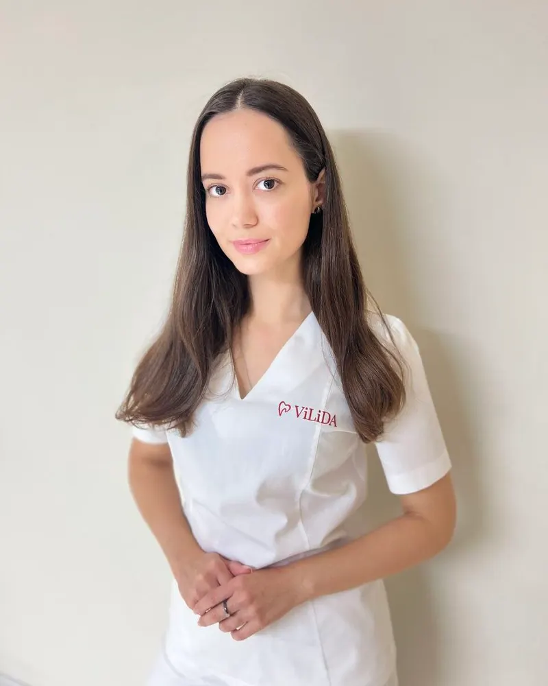
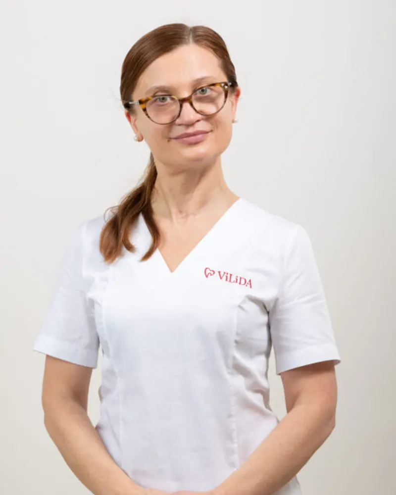
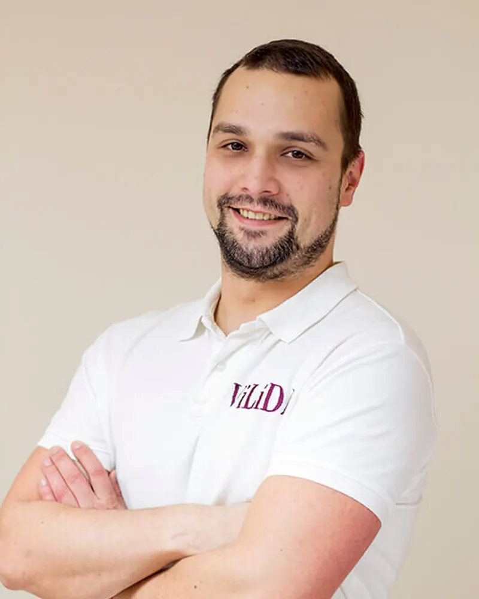
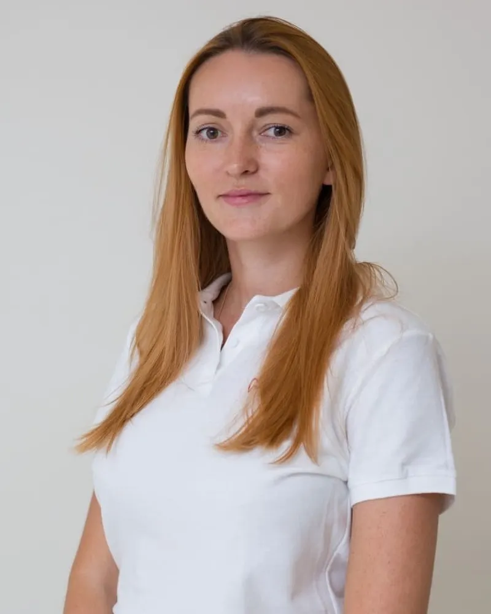
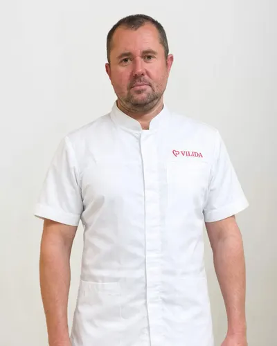
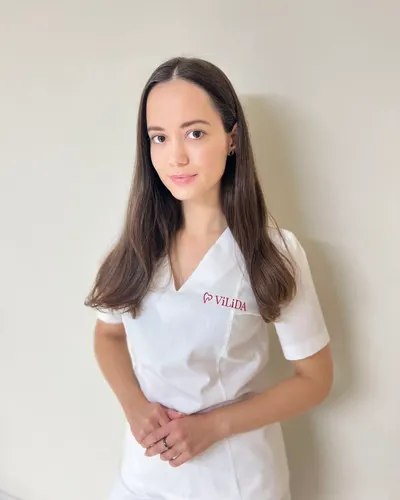
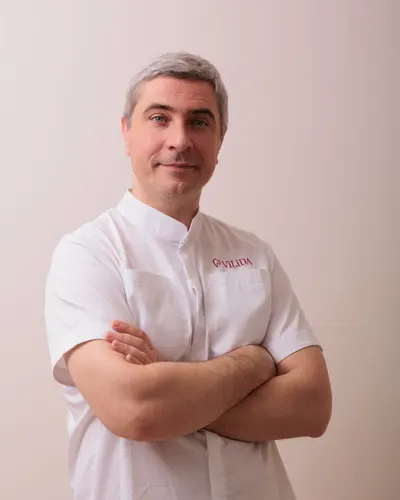
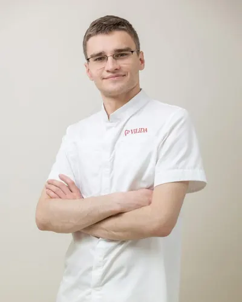
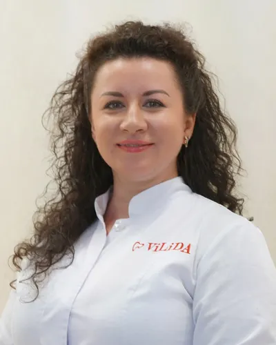
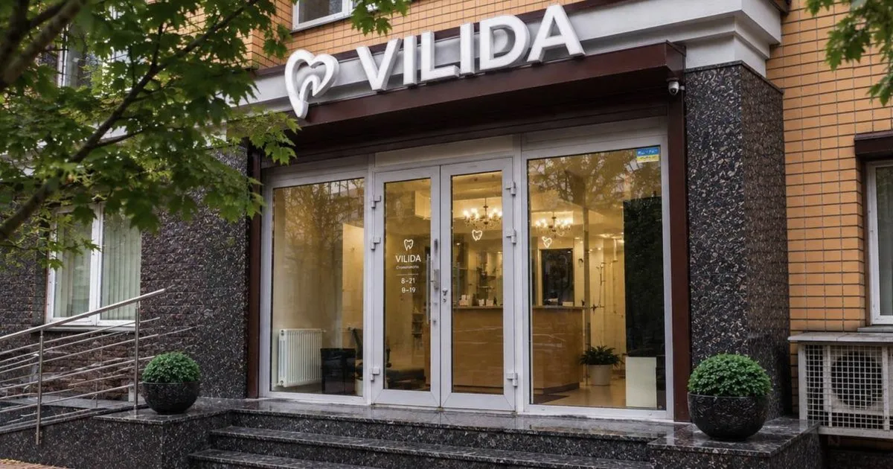

Твоя персональна стоматологія на Оболоні
Один лікар веде вас від першого огляду до завершення лікування. Індивідуальний підхід до кожного пацієнта, а ціни-орієнтири — одразу на сторінці.
- року на ринку
- з 2010
- лікарів у клініці
- 8
- відгуків у Google
- 4,7 / 124
- щодня
- 10–19
Один лікар — від огляду до завершення лікування
-
Свій лікар
Не конвеєр і не черга спеціалістів: один лікар веде вас від першої консультації до завершення лікування.
-
Гарантія 1 рік
На всі імплантаційні та ортопедичні послуги. На інше лікування — гарантія відповідно до рекомендацій лікаря.
-
Запис наперед, без черг
Працюємо щодня з 10:00 до 19:00. А ще є бонусна програма: кожен візит дозволяє накопичувати бали та знижки.
З чим приходять до VILIDA
Ціни з прайсу клініки. Точну вартість лікар назве після огляду й узгодить до початку лікування.
Діагностика й консультація
600 грн консультація
КТ, ортопантомограма, ТРГ. Власний КТ — на місці. КТ 4×4 — 550 грн. Якщо після консультації ви продовжуєте лікування в клініці, консультація безкоштовна.
Ведеваш особистий лікар
Записатися на цей напрям Професійна гігієна
2 500 грн повна, дві щелепи
Лікування зубів
від 2 250 грн фотополімерна пломба
Карієс, пульпіт, періодонтит, лікування під мікроскопом.
ВедеСавенко К.М., Маслов Ю.В., Тищенко В.О.
Записатися на цей напрям Імплантація
від 13 000 грн імплант Bauers під ключ
Straumann, BioHorizons, синус-ліфтинг, кісткова пластика. Гарантія на імплантацію — 1 рік. MegaGen AnyRidge — 26 000 грн, Straumann — 43 000 грн.
ВедеВахтін О.О., Перерва В.В., Жураковська Г.В.
Записатися на цей напрям Протезування
від 8 400 грн металокерамічна коронка
Коронки, вініри, протези на імплантатах. Гарантія на протезування — 1 рік. Цирконієва коронка — 12 500 грн.
ВедеМаслов Ю.В.
Записатися на цей напрям Ортодонтія
14 500 грн металеві брекети, одна щелепа
Дитяча стоматологія
після огляду ціну назве лікар після огляду
Естетична стоматологія
6 200 грн комплексне відбілювання
Повний прайс і всі послуги (Розділ у розробці)
Військовим — знижка 20%
Умови та перелік послуг уточнюйте за телефоном.
8 лікарів. У кожного — свої пацієнти




- Вахтін Олексій Олександрович Стоматолог-хірург, імплантолог, щелепно-лицевий хірург, головний лікар (Розділ у розробці)
- Сташенко Олена Анатоліївна Стоматолог-ортодонт (Розділ у розробці)
- Перерва Вадим Володимирович Хірург-імплантолог (Розділ у розробці)
- Савенко Костянтин Максимович Лікар-стоматолог (Розділ у розробці)
- Волкова Ольга Василівна Стоматолог-ортодонт вищої категорії (Розділ у розробці)
- Маслов Юрій Володимирович Стоматолог-ортопед, стоматолог-терапевт (Розділ у розробці)
- Тищенко Вікторія Олександрівна Стоматолог-терапевт, дитячий стоматолог (Розділ у розробці)
- Жураковська Галина Василівна Хірург-імплантолог (Розділ у розробці)
-

Вахтін Олексій Олександрович
Стоматолог-хірург, імплантолог, щелепно-лицевий хірург, головний лікар
-

Сташенко Олена Анатоліївна
Стоматолог-ортодонт
-

Перерва Вадим Володимирович
Хірург-імплантолог
-

Савенко Костянтин Максимович
Лікар-стоматолог
-
Волкова Ольга Василівна
Стоматолог-ортодонт вищої категорії
-
Маслов Юрій Володимирович
Стоматолог-ортопед, стоматолог-терапевт
-

Тищенко Вікторія Олександрівна
Стоматолог-терапевт, дитячий стоматолог
-
Жураковська Галина Василівна
Хірург-імплантолог
Що кажуть пацієнти
- Ліцензія МОЗ України АВ №539166 від 22.04.2010
- Власний КТ — на місці
- Працюємо з 2010 року, на Оболоні — з 2012-го
Наважився на імплантацію в стоматології біля дому Vilida. Лікар Вахтін Олексій проглянув, заспокоїв, порекомендував зробити зуби на 4 імплантах, операція пройшло спокійно, швидко, тепер відновлююсь і звикаю до нового себе. Від лікаря відчувається багаторічний досвід і професіоналізм, всім рекомендую
Видаляв 4 зуба мудрості, два з яких були складні в лікаря хірурга Перерви Вадима. Не відчував жодного дискомфорту, без болю взагалі. Після операції лікар та асистент пояснили, як доглядати і що робити. Приємні ціни, без доплат чи прихованих платежів. Дякую вам і рекомендую всім
Дуже вдячний клініці Vilida за професійний підхід! Особлива подяка Олені Анатоліївні та Вікторії Олександрівні. Це справжні майстри своєї справи, які вміють створити спокійну атмосферу та детально пояснити кожен етап лікування. Результатом задоволений на всі 100%, щиро рекомендую цих спеціалістів!
Питання й відповіді
Болить зуб — чи можна потрапити сьогодні?
Так, намагаємося прийняти в день звернення: при гострому болю чи набряку підберемо найближчий вільний час. Працюємо щодня з 10:00 до 19:00. Телефонуйте: (067) 465 06 00.
Чи боляче лікувати зуби?
Лікуємо під сучасною анестезією, тож більшість процедур проходить без болю, а лікар пояснює кожен етап. Для дітей є також лікування уві сні.
Чи лікуєте дітей?
Так. Дітей приймає дитячий стоматолог, а вирівнюванням зубів займаються два ортодонти. Лікуємо молочні зуби, робимо профілактику: герметизацію й фторування.
Скільки коштує консультація?
Консультація лікаря-стоматолога — 600 грн за прайсом. Якщо після неї ви продовжуєте лікування в клініці, консультація безкоштовна.
Яка гарантія на лікування?
На імплантацію та протезування — 1 рік. На інше лікування — гарантія відповідно до рекомендацій лікаря.
Як нас знайти
Біля парку «Наталка», на Оболоні. Оболонська набережна — приблизно за 200 м.
просп. Володимира Івасюка, 6, корпус 2, Київ
Щодня 10:00–19:00
Зупинки «Парк відпочинку „Наталка“» (≈ 175 м) і «Вулиця Приозерна» (≈ 200 м): автобуси № 73 і 102А, маршрутка № 180.
Прокласти маршрут Instagram Facebook
